PROJECT-NOTE
2025/07/13
【アイディアスケッチ】
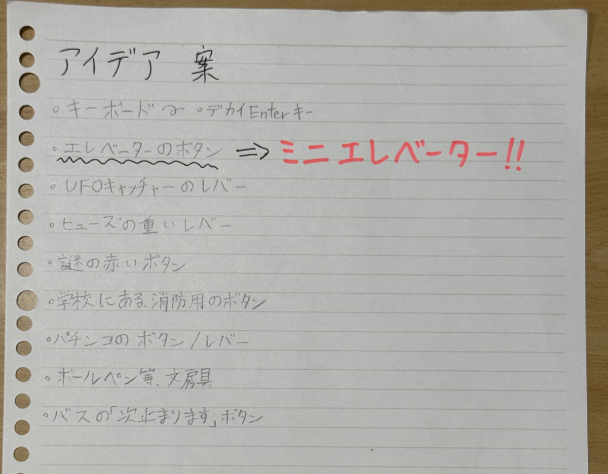
【概要】
自分がもともと、ボタンを押す・クリックすることが大好きなので、
それに基づいてメディアアートを作成したいと思いました。
上のアイディア案を一通り書き終わったときに、
「ミニエレベーターを作ったらおもろくね！？！？」と閃く。
今回は相棒となるSatoとの共同制作になります。
SatoのHP↓
Satoデザイン演習Ⅲ・Ⅳ
【プロセスメモ】
「■は考えないといけないこと、疑問等●は具体的にやること、→はやったこと」
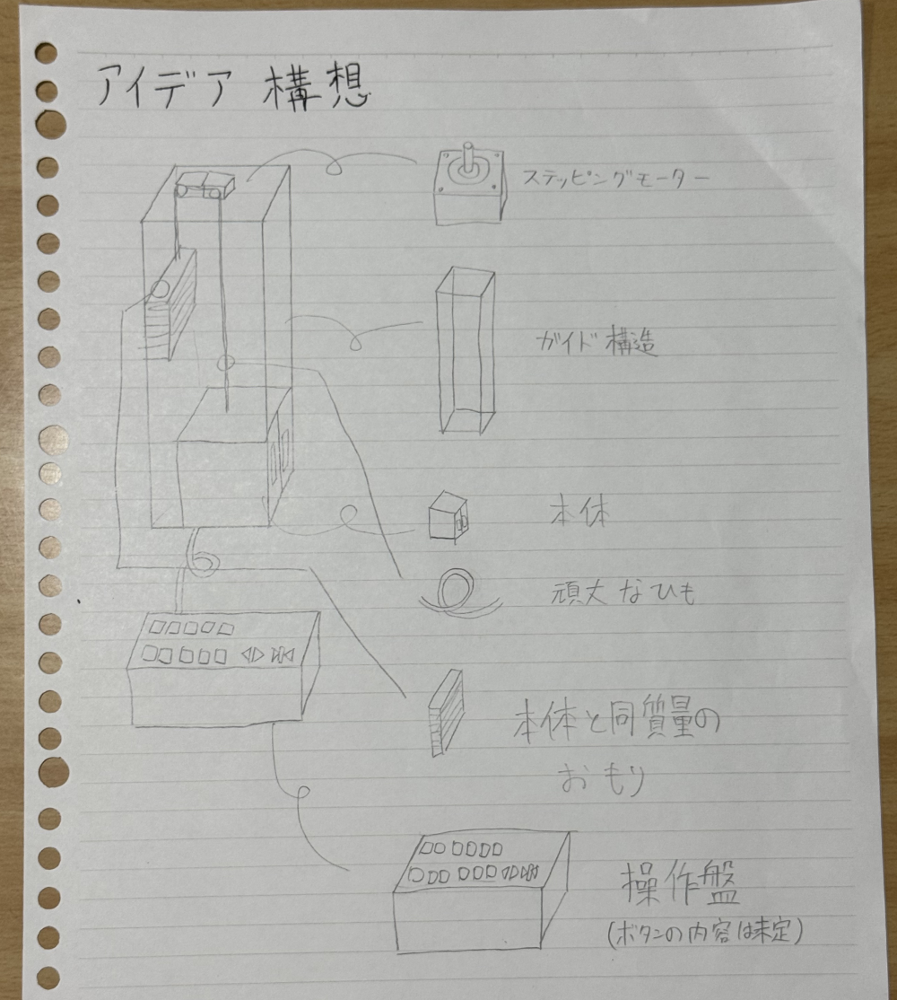
↑とりあえずでスケッチしたミニエレベーター。現時点で必要になりそうな物を
ピックアップ。
■ エレベーターをどこまで再現するか(外観、サイズ、動きなど)
●ガイド構造＋本体のサイズの決定
→とにかくサイズ感を決めないと、本体のサイズや重量、おもりの重さなどが
決まらないため、まずはガイド構造の試作をすることに。
ガイド構造スケッチ①↓
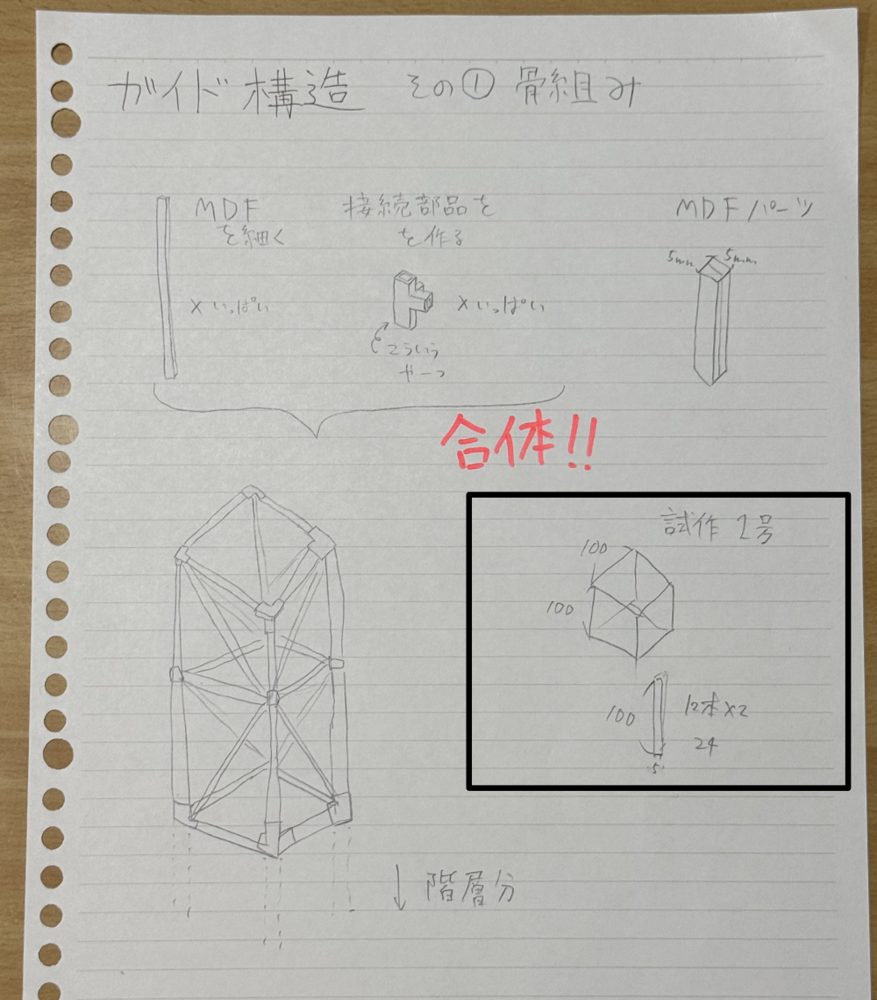
黒枠で囲んだところが試作内容です
接続部品の3Dモデル↓
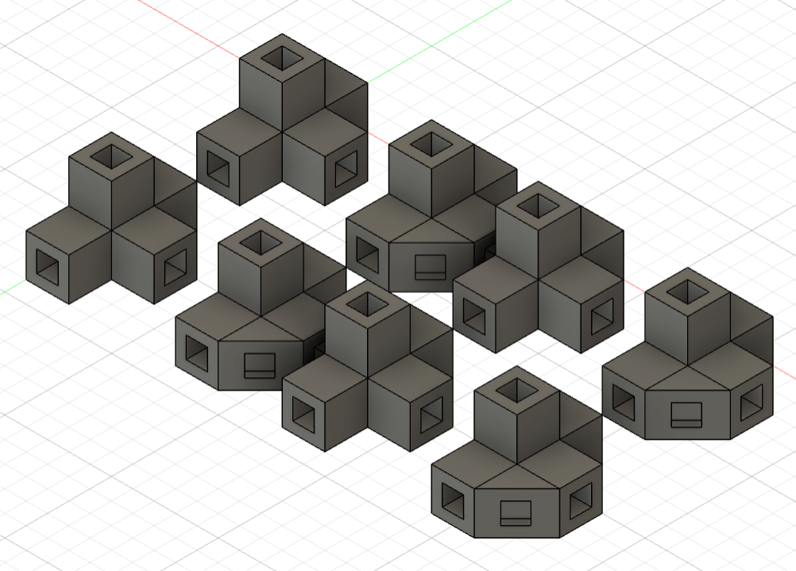
このデータ、なんと早くても5時間かかるとのことで、授業時間の関係で
とりあえずMDFパーツのみで作ることに。
試作1号完成品↓
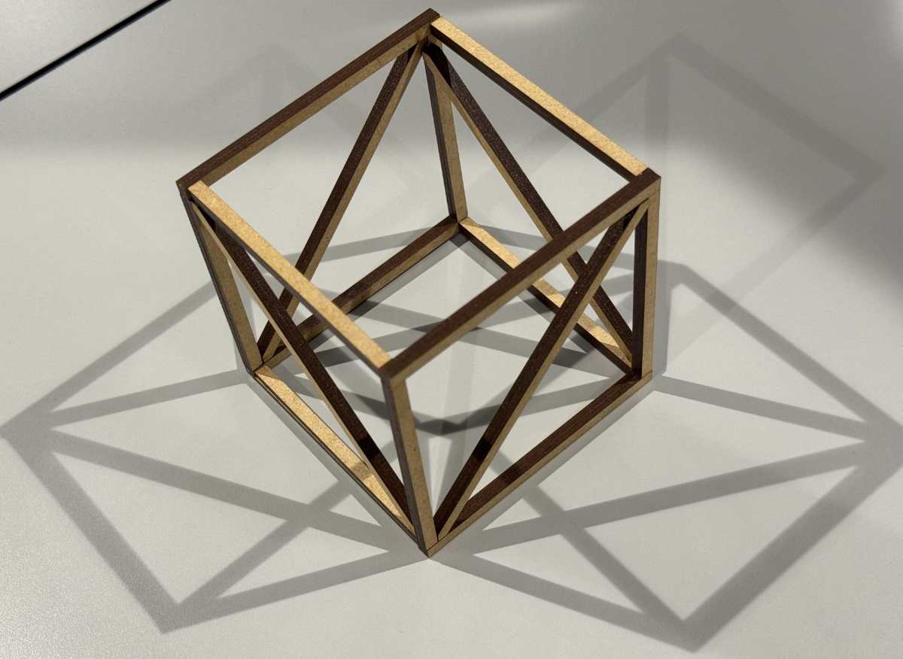
この試作品、写真で見る限りではイイ感じに見えますが、実際はMDFを
レーザーカットした後の、色が濃い部分の接着が非常に悪いです。
MDF2.5㎜を2つ接着して、5X5(㎜)の棒を作ったため、棒の精密さが
足りずに接着不良が多発しました。また、サイズ感も少し小さかったため、
もう少し大きくすることに。
■ガイド構造の素材をどうするか？
●そもそも自作するのか、それとも既製品で応用するのかを決める。
→今後の拡張性を考慮して、素材は「アクリル」に決定！！
→試作品2号を作る
試作品２号完成品↓
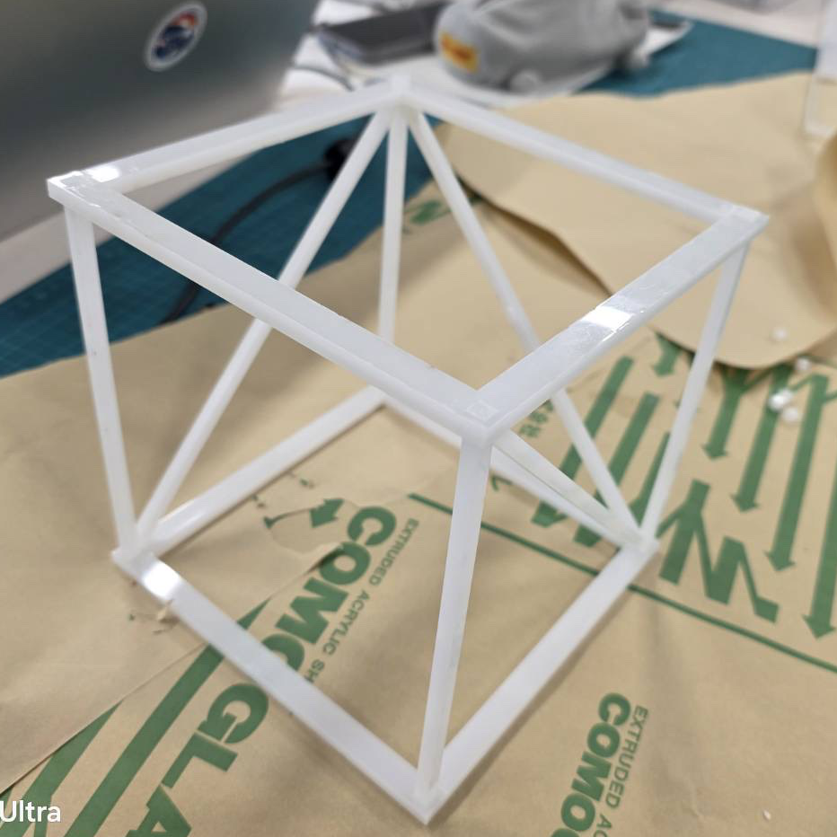
素材がアクリルかつ、アクリル板が5㎜だったこともあって、かなり
イイ感じに組み立てられました！
本番では、4つ角の柱はもっと長くして、途中のパーツを増やしていきます！
■ガイド構造のサイズはどれくらいにするのか？
●ガイド構造のサイズ(試作品2号をどれだけ上に積み上げるか)を決める
→ファブラボに置いてあった600㎜定規を床に置いて、どれくらいの大きさ
が適切かを考えました。試作品2号から、140㎜を繰り返すのがよさそうと
判断したため、それを5回、700㎜で作ることに。
また、強度アップと今後のために、ガイドレールが欲しいなと思ったため、
ケーブルカバーで代用することにしました。これも自作しても良かったのですが、
強度面と精度面から既製品で代用したほうが良いと判断。
こういうの↓
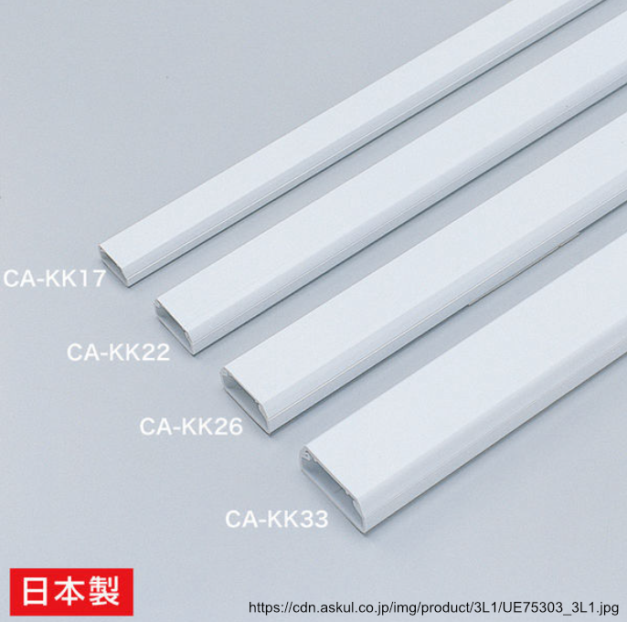
●ガイド構造をほぼ完成させる
→とにかくガイド構造がないと話にならないため、最優先で制作しました！
ガイド構造途中経過↓
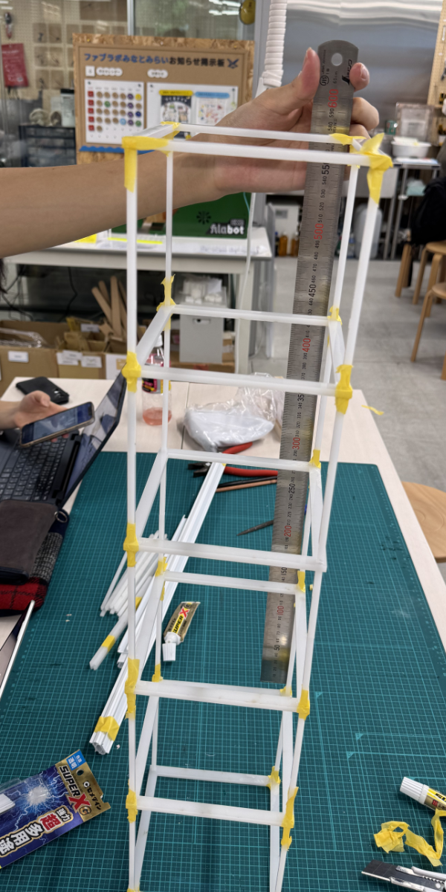 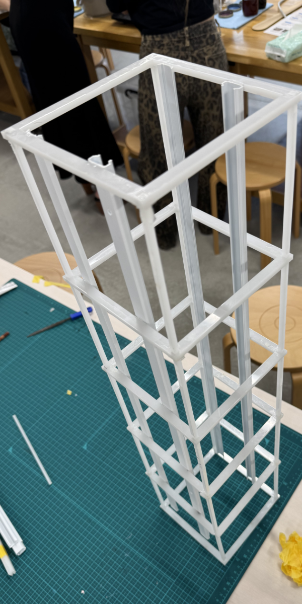
ガイド構造ほぼ完成！！！↓
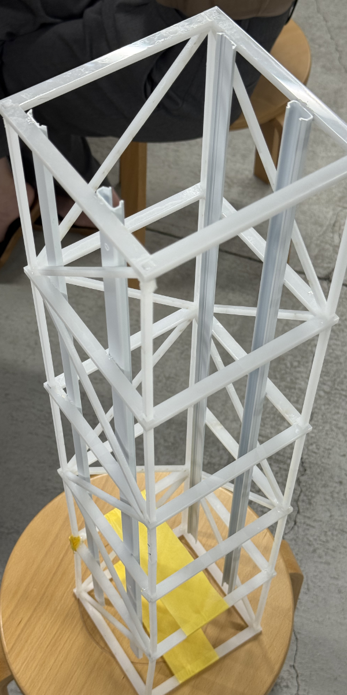 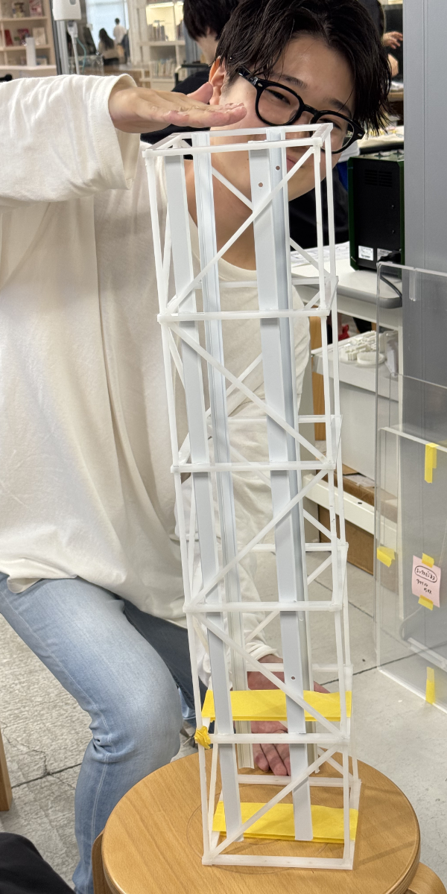
ついにガイド構造がほぼ完成しました！
あとはエレベーター本体と動作用のあれこれを組み立てるだけです！
●エレベーター本体と本体と同じくらいの重量のおもりを作成
→これもアクリルを素材として制作しました！
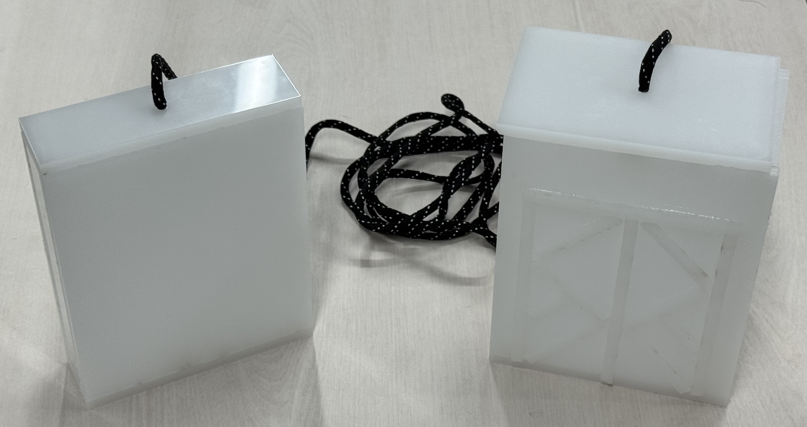
この写真の時点では、モーターを固定するパーツや滑車ができていなかった
ため、上の部分は接着していません！(紐の長さを調節するため)
また、小さいおもりのほうには紙粘土を入れて本体と同じ重量にしました！
写真に写っている紐は、100均に売っていた紐で、靴紐より少し太めなサイズ感
です。丈夫で使いやすかったです！！
なお、今回制作した本体の扉はあくまで飾りで、実際には動きません。
これは、本体の重量関係や、プログラミングがあまりにも複雑になりそうだった
からです。
あと単純に本体サイズが小さいため、その機能を搭載できるか怪しかったのも
あります！
予告編
ガイド構造、本体、おもりができたので、授業で使ったステッピングモーターを
使って実際に動かしてみました！
この動画の撮影時点では、本体とおもりにはガイドレール用の車輪となる
パーツができていなかったので、段ボールで代用してあるのと、前述の通り
本体とおもり上部が固定されていないためマスキングテープで一時的に
とめてあります！
また、モーターとガイド構造を固定するパーツも仮止めです！
●部品の購入
購入品一覧↓
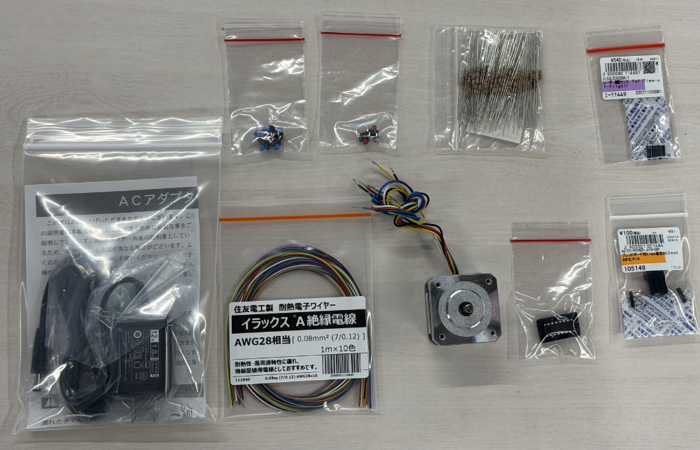
ここに写っているのは秋月電子通商より購入した部品たちです！
秋月電子通商
ちなみにここにあるパーツは全て使ったわけではありません笑笑
その理由は後述します！
なんなら、ブレッドボードとジャンパーワイヤーが足りなかったので追加購入
してます！
●モーターにつける滑車の作成
→滑車は軸とガチガチに固定したかったので、モーターの軸の直径と同じ大きさ
の穴を開けました。素材は、何かあったときのためにMDFで作成しました。
案の定、下の写真の段階ではピッタリすぎて軸とハマらなかったため、
金属やすりで少し穴を広げました。
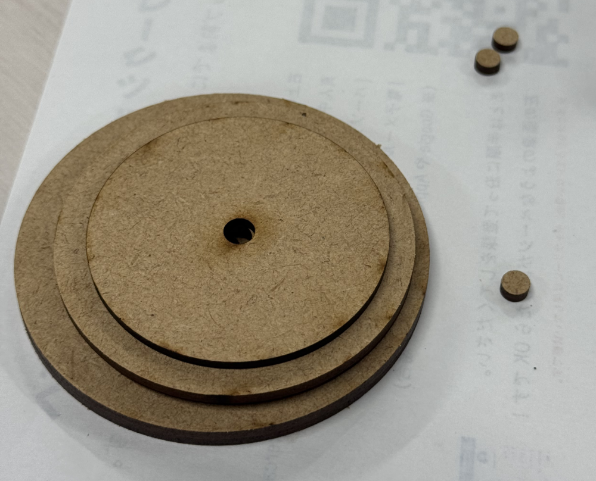
●エレベーター動作用のプログラミングをする
→ChatGPT様のお力をお借りしてプログラミングをしました。ただ、生成文を
そのままコピペしても動かないことも多く、エラーも数回出ていたのでとても
簡単とは言えない作業でした。特に後述する配線との相性が大変過ぎです！！
Pythonプログラミングデータ
Arduinoプログラミングデータ
●モーターとボタンの配線
配線に関してもChatGPT様の知識をお借りして配線しました。
ただ、これがまあ順調にいかずに心が折れかかりました。笑笑
そもそも、ステッピングモーターは配線が複雑になりがちで、配線の順番を
1つでも間違えただけですぐ動かなくなります。仮に動いても、動き方が滑らか
じゃなかったりします。
また、タクトスイッチに関してはなぜか指示通り配線してるのに動かない現象が
発生したりと、とても苦労しました。
やはり、ChatGPT様の力を過信しすぎないことが重要だと思いました。
最終的な配線図↓
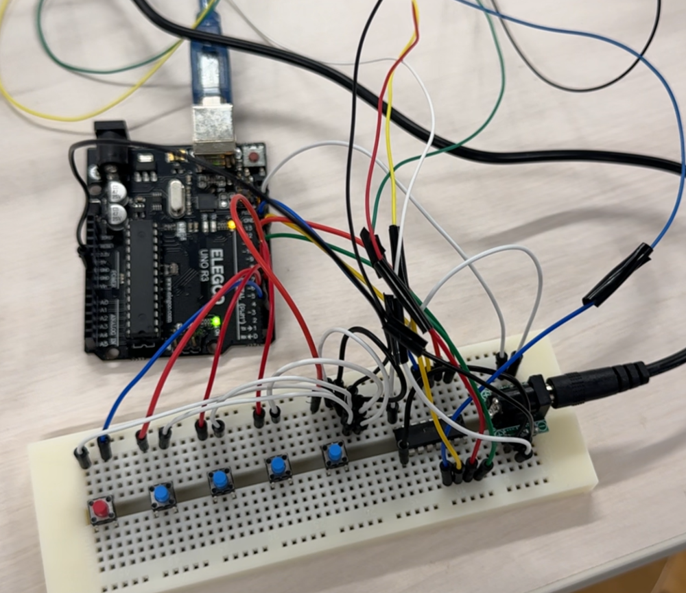
■ IoTをどう組み込み、どうメディアアートとしての面白さを出すか
●アイデアを出す
→最初の頃は、エレベーターを一番上まで持って行って、そっから一気に下に
下して地面ぎりぎりで止めるチキチキレースの遊びをしようと考えていて、
ToF距離センサーまで買ったのですが、買ったはいいものの別売りのパーツが
必要になるらしく、それは断念。
そこで、プログラミング側でランダムに抽選した後、その階に移動するように
しました。そこにおみくじ要素を見出します。
上昇した階に応じて運勢も上昇！！（笑）て寸法です。
これなら追加でパーツを購入する必要もなく、かつ面白さを出すことが
できます！
QRコードを読み込んで信号を送る(IoT要素ねじ込み)と、それがトリガーとなって
抽選をするようにしました！！！！
前記のプログラミングデータには、既に完成形なため、IoT要素も含まれています。
完成
約2か月かかった大作も、ついに完成しました！！！！
総評
IoTの要素は最初に考えていたものとかけ離れてしまったが、結果的には
満足のいくものを作ることができた。
また、当初の一番の目的であった「ボタンを押す快感」を十分に達成
しているため、総合的に考慮すると非常に納得のいく作品になった。
途中、プログラミングや配線で挫折しかけたものの、日を改めてチャレンジ
したらすんなり行けたのが面白かった。むしろ困惑した。笑笑
少し心残りなのは、飾り付けだ。あと1人か2人追加でいれば、飾り付けまで
手が回ってめちゃめちゃ完成度を高められたのかなとも思った。
”おみくじ”エレベーターという名前なので、より俗物的で、ミステリアスで、
オカルトチックな飾り付けができたら最高だったなと個人的に思った。
また時間が大きく空いたときにチャレンジしてみたい。